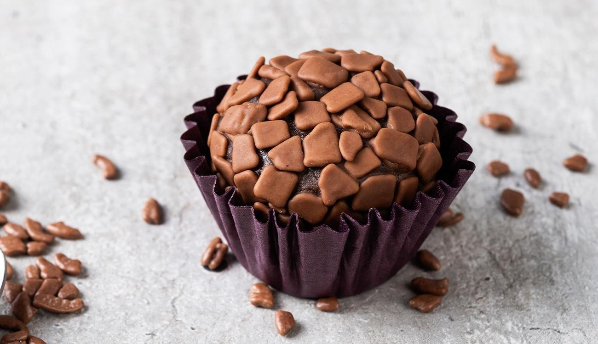
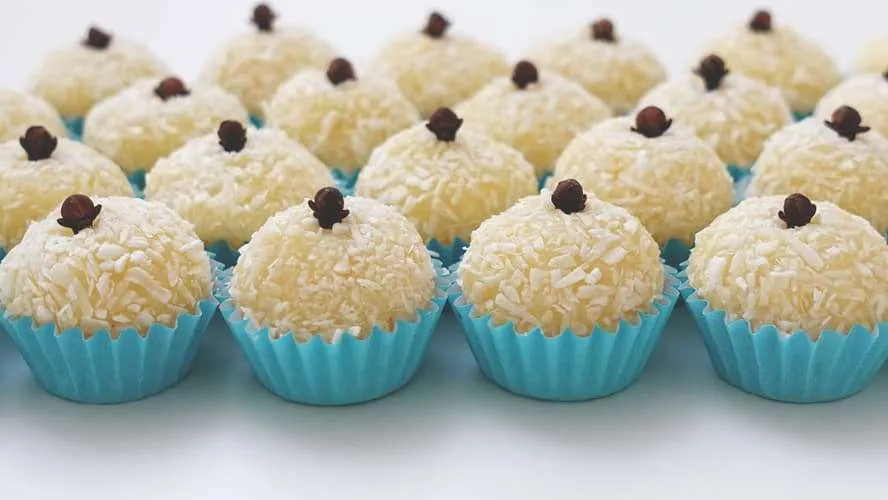

Brigadeiro Bicho de Pé
O brigadeiro bicho de pé é uma deliciosa variação do clássico brigadeiro brasileiro, conhecido por sua textura cremosa e sabor inconfundível. Com uma base de leite condensado, chocolate em pó e manteiga, essa versão é feita com uma mistura de chocolate ao leite e um toque de chocolate branco, criando um contraste de cores e sabores. Envolto em granulado de chocolate ou confeitos coloridos, o brigadeiro bicho de pé é perfeito para festas, docerias ou como uma indulgência pessoal.
Ler mais

Brigadeiro
O brigadeiro tradicional é um ícone da confeitaria brasileira, conhecido por sua textura cremosa e sabor irresistível. Feito com uma mistura simples de leite condensado, chocolate em pó e manteiga, este doce é cozido até atingir o ponto ideal, criando uma massa que derrete na boca. Depois de esfriar, os brigadeiros são enrolados em bolinhas e cobertos com granulado de chocolate, tornando-se uma escolha perfeita para festas, aniversários ou simplesmente para saborear em casa.
Ler mais

Beijinho
O beijinho é um doce típico da culinária brasileira, muito semelhante ao brigadeiro, mas com um sabor de coco irresistível. Feito com leite condensado, coco ralado e manteiga, o beijinho é cozido até atingir uma consistência cremosa e aveludada. Depois de esfriar, as bolinhas são enroladas e cobertas com mais coco ralado ou granulado de chocolate, criando uma combinação deliciosa e perfeita para festas, aniversários e celebrações.
Ler mais